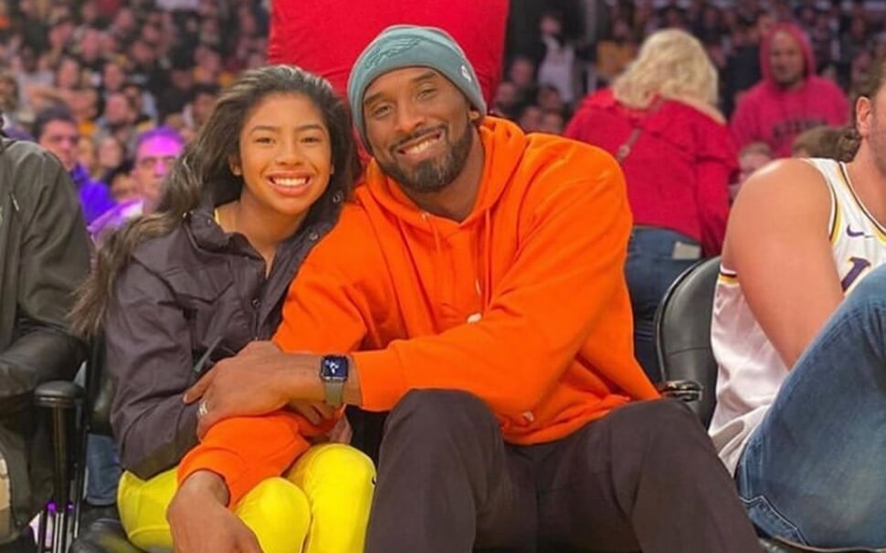

Kobe 'Bean' Bryant was born August 23, 1978 in Philadelphia, Pennsylvania. Bryant’s father, Joe (“Jelly Bean”) Bryant, was a professional basketball player who spent eight seasons in the NBA and eight more playing in Italy, where Bryant went to school. When his family returned to the United States, Bryant played basketball at Lower Merion High School in Ardmore, Pennsylvania, where he received several national Player of the Year awards and broke the southeastern Pennsylvania scoring record set by Wilt Chamberlain with 2,883 points.
Kobe & Gianna Bryant's Life
Bryant opted to forgo college and declared himself eligible for the NBA draft when he graduated from high school. The Charlotte Hornets chose him with the 13th pick of the 1996 draft. He was traded to the Lakers shortly thereafter and became the second youngest NBA player in history when the 1996–97 season opened. He quickly proved his merit with the Lakers and was selected for the NBA All-Star Game in just his second season, becoming the youngest All-Star. The Lakers had won three consecutive NBA championships ending with five lead by Kobe.

After Bryant's retirement, he wrote books and won an Academy Award for an animated short film he had written. He coached his daughter’s travel basketball team. There was talk that he worked out with a few NBA players behind the scenes in the offseason. Bryant rarely watched NBA games after he retired. He only did so if a player asked him to review film. Otherwise, he spent most of his time on his projects or with his family.

Gianna Bryant was born May 1, 2006. She was born in Orange County, California. She was the second oldest of three sisters named Natalia (oldest), Bianka and Capri. Always at her dads games and always in pictures with him after his games.
Her mother was a model and her father won five NBA championships with the Los Angeles Lakers. She was also the granddaughter of Joe Bryant and great-niece of John "Chubby" Cox. Her father, Kobe, was the reason she started playing basketball. Bryant played basketball for the Mamba Sports Academy. She played on the competitive team with the club at the U-10 through U-15 levels.
Gianna Bryant wanted to play college basketball at the power house University of Connecticut, she reguarly attended UConn, WNBA, and Lakers games with her father. She had a very close relationship with her father Kobe as she was usually always by her father's side. Kobe would talk about Gianna saying how she was female version of him.
At 9:06 a.m. Pacific Standard Time on January 26, 2020, a Sikorsky S-76 helicopter departed from John Wayne Airport in Orange County, California, with nine people aboard: Gianna, her father, six family friends, and the pilot. The group was traveling to Camarillo Airport in Ventura County for a basketball game at Bryant's Mamba Academy in Thousand Oaks.
At 9:45 a.m., the helicopter crashed into the side of a mountain in Calabasas, about 30 miles (48 km) northwest of downtown Los Angeles, and began burning. Bryant, his daughter, and the other seven occupants were killed. This also started a quarter-acre bush fire. At 9:47 a.m. authorities were called. Initial reports indicated that the helicopter crashed in the hills above Calabasas in heavy fog. Witnesses reported hearing a helicopter struggling before crashing.

On February 5, 2020, Bryant's school Harbor Day School retired her jersey number 2. At the 2020 NBA All-Star Game on February 16, Team LeBron wore the Bryant's jersey number. On April 17, 2020, Alyssa Altobelli, Gianna Bryant, and Payton Chester were named honorary draft picks in the 2020 WNBA draft. The league also introduced Kobe and Gigi Bryant WNBA Advocacy Award.